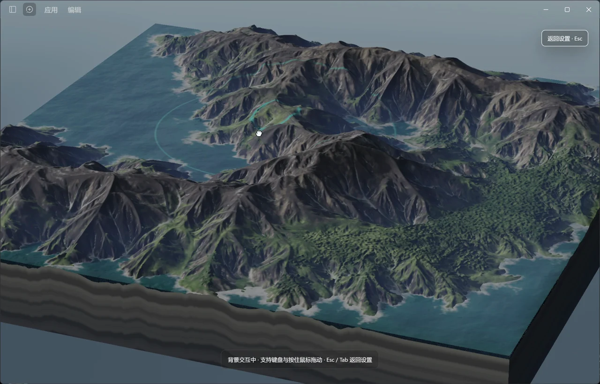

捏一座属于你的山
点「预览并交互」，按住鼠标增高，Shift 配合鼠标挖低。山脊和海岸，跟着你的手势变化。
A LITTLE MORE ALIVE.
01 / YOUR DESKTOP, YOUR PLAYGROUND

点「预览并交互」，按住鼠标增高，Shift 配合鼠标挖低。山脊和海岸，跟着你的手势变化。
方向键逐步移动，走向敌人即可攻击。摸鱼也有风险——别像录屏里一样被反杀。
Esc 返回设置。平时的打字、选中与快捷键，照常交给 DSH。交互状态不会一直记住。
02 / MAKE IT YOURS
内置作品是起点。一两百行画面代码就可能画出一扇雨窗、一片海；Sound 代码还能实时合成音乐。导入喜欢的作品，也可以从零写自己的。
一个编辑区，多个文件标签。改完「保存并运行」，画面就会回答你。
阅读导入说明void mainImage(out vec4 color,
in vec2 pixel) {
vec2 uv = pixel / iResolution.xy;
float t = iTime;
color = vec4(
0.5 + 0.5 * cos(t + uv.xyx
+ vec3(0.0, 2.0, 4.0)), 1.0);
}03 / HELLO, HUMANS & AI
代码会画画，也会作曲。
说明动画 · 真实录屏 · 代码音乐
旁白为 AI 合成女声。音乐作品保留对应录屏声音，旁白期间自动降低音乐音量；其余片段无录屏原声。说明动画与实际插件界面均有标注。
04 / READY WHEN YOU ARE
免费开源。先装插件，
再挑一个让你想多看一眼的世界。
dsh plugin --profile desktop add dsh-shadertoy-skin已上架 dshmarket 插件市场，可以搜索 dsh-shadertoy-skin 安装；也可以在 DSH「插件 → 添加插件」中填包名。
把下面这段发给能操作本机的 AI 助手，让它帮你完成安装和验证。